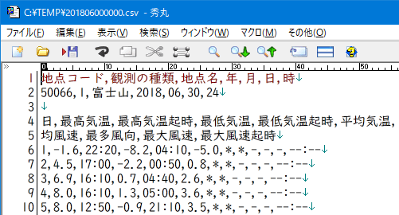
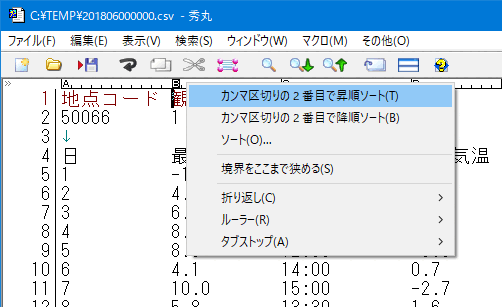
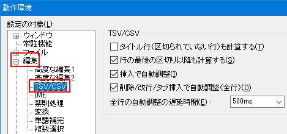
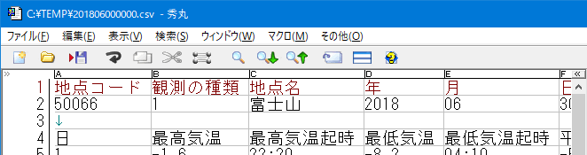
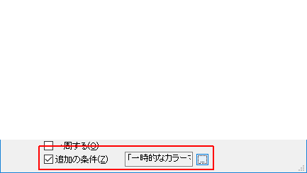
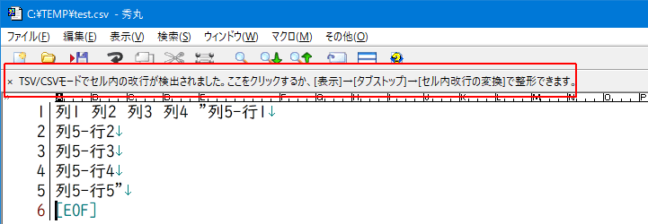

秀丸エディタ Ver.8.00以降では、「CSV/TSVモード」が使用できます。
エディタ画面上で、CSV(カンマ区切りテキスト)、TSV(タブ区切りテキスト)を、表計算ソフトの様に表示するモードです。表計算ソフトのように計算する機能はありません。
秀丸エディタ Ver.8.89 より、「セル内での改行」 にも対応しています。詳細は「補足」の「セル内での改行」を参照。
TSV/CSVモードの場合、動作が変わったり、使えない機能があります。詳細は、秀丸エディタのヘルプー「TSVモード/CSVモード」を参照してください。
普通の設定で、CSVファイルを開いた状態です。

「CSVモード」でCSVファイルを開いた状態です。(縦と横のガイドラインを表示)
カンマやタブを区切り文字として、表計算ソフトのように表示する事が可能です。

CSVモードにするには、「メニュー」から設定する方法と、「ファイルタイプ別の設定」から変更する方法があります。
メニューは「表示」−「タブストップ」−「CSVモード(カンマ区切り)」で設定します。
「ファイルタイプ別の設定」は「体裁」ー「タブ」−「タブの文字数」で設定します。 TSVモードかCSVモードを選んでください。
一時的に表示を変更したい場合にはメニューから変更する方がお手軽です。
CSV/TSVモード特有の動作として、ルーラ部のカラムをクリックする事で、列全体を選択できます。そのままドラッグして、列を移動させることも可能です。
また、ルーラ部のカラムを右クリックすることで、その列をキーにしたソートが可能です。

「ファイルタイプ別の設定」ではなく、「動作環境」という扱いです。設定が表示されない場合は、「上級者向け設定」にチェックを入れてください。
「TSV/CSVモードの詳細」
「動作環境」−「編集」−「TSV/CSV」で設定します。
詳細はヘルプ：TSV/CSVモードの詳細を参照してください。

「ルーラの詳細」
TSV/CSVモードのカラム表示方法を設定できます。「動作環境」−「表示/操作」−「ルーラー」にある「TSV/CSVモードのとき」で設定します。
詳細はヘルプ：ルーラの詳細を参照してください。
「目盛り」は、半角1文字ずつの目盛りを表示します、
ABCの設定

123の設定

桁数
「ファイルタイプ別の設定」の「デザイン」で「ガイドライン(縦)」と「ガイドライン(横)」を、表示するようにすると、Excelのセルっぽく表示することが出来ます。

例えば、以下の状態で、項目(セル)内の「最高気温」だけを検索する場合を考えます。(「最高気温時」にはマッチさせない)

単純に「最高気温」で検索した場合は、「最高気温」と「最高気温時」にマッチしてしまいます。
項目(セル)内の内容ということで、正規表現を使用し「^最高気温$」で検索しても、マッチしません。
これは、実際には
日,最高気温,最高気温起時,最低気温,最低気温起時,平均気温,日照積算量という内容を検索しているため、^と$は、行頭と行末になるためマッチしません。 (項目内の先頭、末尾にはならない)
項目(セル)内のみマッチさせるには、正規表現の、前方一致(戻り読み)と後方一致(先読み)を使います。
(?<=^|,)最高気温(?=$|,)正規表現を使用するため、検索内容に正規表現のメタ文字がある場合はエスケープする必要があります。
または、
(?<=^|,)\Q最高気温\E(?=$|,)という感じで、検索したい内容を、\Qと\Eで囲みます。
CSVの場合は "," が区切り文字となりますが、TSVの場合は、"\t" を使います。
(?<=^|\t)\Q最高気温\E(?=$|\t)指定した列のみ検索対象にしたい場合は、複数の方法があります。
複数選択を使う方法は、Ver.8.94以降が必要です。
検索対象にしたい列全体を選択します。(ルーラー部分をクリックすれば、列全体を選択できます)
メニューの「検索」−「カラーマーカー」−「一時的なカラーマーカーを付ける」を選び、カラーマーカーを付けます。
対象にしたい列に対し、1.〜2.を繰り返します。
検索ダイアログを表示させ、「追加の条件」にチェックを入れ、範囲を「「一時的なカラーマーカー」の範囲」に設定します。「追加の条件」に関しては、「第II部〜知っていると便利な秀丸の機能 検索」にある、「追加の条件」を参照してください。

これで検索すれば、指定した列(カラーマーカーを付けた列)のみを、検索の対象に出来ます。
検索対象にしたい列全体を選択します。(ルーラー部分をクリックすれば、列全体を選択できます)
メニューの「その他」−「コマンド一覧」から「クリップボード系」−「複数選択化」を選び、複数選択状態にします。
対象にしたい列に対し、1.〜2.を繰り返します。
検索ダイアログを表示させ、「選択した範囲」にチェックを入れ、「文字単位」に設定します。
「選択した範囲」の詳細については、[HME0083A]●検索/置換の「選択した範囲」の動作を参照してください。
これで検索すれば、指定した列(範囲選択した列)のみを、検索の対象に出来ます。
CSVモードでも、区切り文字である "," の colorcode は、"0x00000020(タブ)"がセットされます。
TSV/CSVモードの場合、設定によっては区切り文字(CSVの場合：","、TSVの場合：タブ文字)は表示されません。
表示する場合は、「ファイルタイプ別の設定」-「デザイン」-「場所の一覧」にある「タブ文字」にチェックを入れます。 (CSVの場合も、「タブ文字」にチェックを入れてください)
CSVモードで、「タブ文字」にチェックを入れ、区切り文字を表示した場合

秀丸エディタ Ver.8.89 より、「セル内での改行」 にも対応しています。 Excelと違い、セル内で複数行を表示する形式ではなく、セル内改行を特殊文字として1行に表示します。
Ver.8.94より、「ファイルタイプ別の設定」-「体裁」-「タブ」に「セル内改行の変換」が追加され、ファイルタイプ毎に、自動で「セル内改行の特殊文字への変換」を行うことができます。
セル内の改行があるのを検出すると、画面上部に注意書きが表示されます。

注意書き部分をクリックすると、「セル内改行の変換」ダイアログが表示され、セル内改行の特殊文字への変換方法を選択できます。
特殊文字への変換方法は以下の2種類になります。
半角の矢印に変換
特殊改行に変換
ファイルの「内容を確認するだけ」なら、どちらでも問題ないでしょう。他のアプリケーションに貼り付けたりする場合は、「特殊改行に変換」にしたほうがいいでしょう。